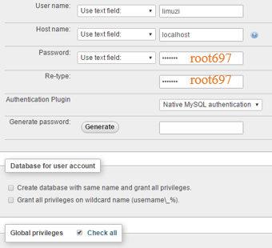

Lauch XAMPP control panel
Start Apache server
Start MariaDB server
Click on Config and select php.ini
Change the configuration file php.ini to increase the import size
post_max_size = 200M
upload_max_filesize = 100M
memory_limit = 100M
Restart Apache and MySQL
Click on Admin to launch phpMyAdmin
Click on Import in phpMyAdmin
Upload the ml1592_diseaserelatedprotein database backup file, click here to download the backup file.
Click on Go to run the script
Keep the website files in the folder below:
C:\xampp\htdocs\BCHB697\ml1592
Click on User accounts
Click on Add user account to create a new account
Enter the login informatin below and check all global privileges:
User name: limuzi
Host name: localhost
Password: root697
Test the connection
Type in the URL below to a browser and you should see an empty page with no error